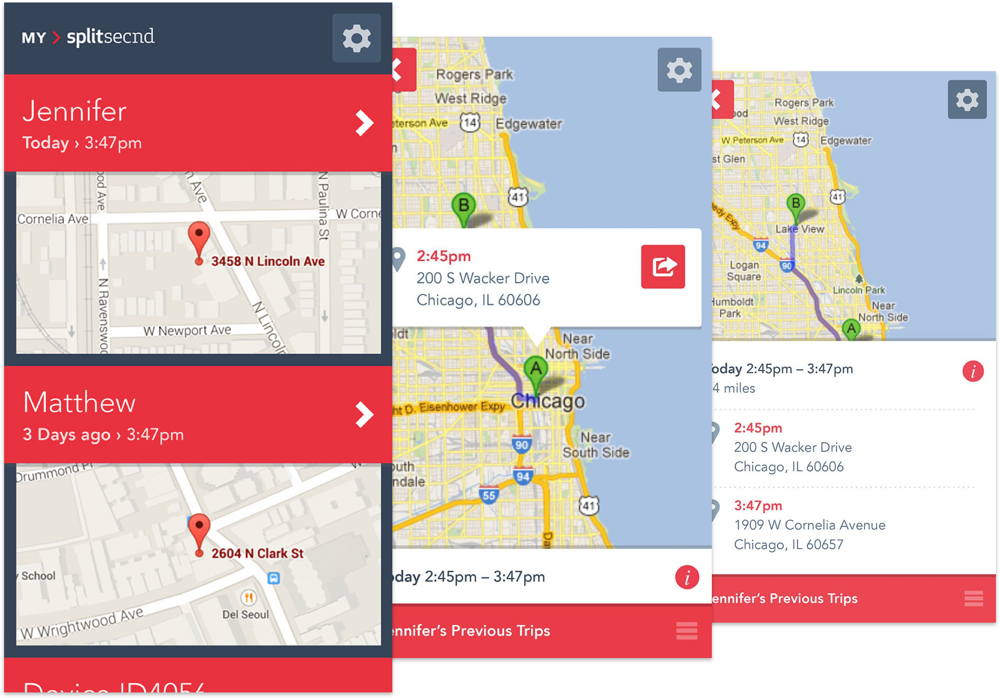
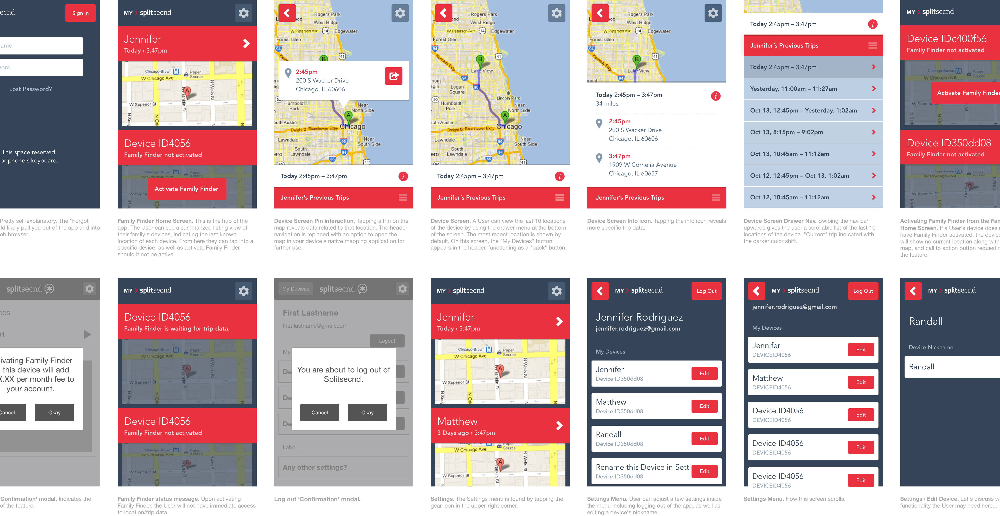

<div class="post">
	<article class="post-content">
		{% include component__site-header-new.html %}		
		<div class="l-container">
			<header class="l-post-header post-header">
				<h3 class="eyelash">{{ page.title }}</h3> 
				<h1 class="page-title" style="color: {{ page.color2 }}">{{ page.summary }}</h1>
			</header>

			<figure>
					
			</figure>

			<div class="l-column">
				<p><a href="https://www.splitsecnd.com/">Splitsecnd</a> is a plug-in crash detection device that utilizes an accelerometer to detect collisions and automatically call for help. It aims to help older, non-OnStar enabled vehicles stay safe on the road. Beyond crash detection, a secondary function of Splitsecnd is it’s Family Finder service. This service allows family members to use GPS to track and locate cars within their plan from their iPhone. Back in 2012, I worked with the team at <a href="http://www.onedesigncompany.com">One Design Company</a> to help design the first version of the Family Finder application.</p>
				<p>I started by digging deep into the desired functionality of the app. After a couple rounds of meetings about defining MVP, I began to sketch out workflows illustrating the User performing the following key interactions:</p>
				<ul>
					<li>Browse a list of vehicles within their Family Finder plan in order to locate a specific family member / vehicle.</li>
					<li>Browse a list of a vehicle’s last ten trips, and select one to view in detail.</li>
					<li>Activate or deactivate a vehicle’s Splitsecnd device.</li>
					<li>Editing a device’s vehicle name.</li>
				</ul>
				<p>Focusing on the core interactions allowed me to iterate quickly without feeling like I was throwing away work. By fleshing out these workflows up-front I had a much better idea of what areas of the app required special attention, and what areas were best left to standard iOS design patterns. Those boundaries helped form the basis of the visual design.</p>			
			</div>
		</div>

		<figure>
			
		</figure>

		<div class="l-container">
			<div class="l-column">
				<p>Over the course of several rounds of feedback, I focused on aligning the application design with Splitsecnd’s newly established brand guidelines (created by <a href="http://twitter.com/davidsieren">David Sieren</a>). Paying specific attention to the use of Avenir Pro, I integrated the flat, clean aesthetic of the <a href="https://www.splitsecnd.com/">marketing site</a> and product packaging with the elements of the user interface.</p>

				<p>Aside from designing the Family Finder app, I was tasked with developing a series of pictograms for the marketing site to help illustrate the functionality provided by the Splitsecnd device. The challenge was to try and soften the potentially dramatic scenarios (think car accident or medical emergency) where the having a Splitsecnd equipped vehicle would be useful.</p>

				<figure>
					
				</figure>
				<figure>
					
				</figure>

				<p>Working on a native application was challenging and rewarding. I learned to resist the urge to reinvent common iOS design patterns. I was also thoroughly schooled in the art of asset production, and saved way too many PNGs before I figured out how to properly use <a href="http://macrabbit.com/slicy/">Slicy</a>. While the <a href="https://www.splitsecnd.com/">marketing site</a> lives on, the design of the Family Finder application has since been updated. The newer version is available on the <a href="https://itunes.apple.com/us/app/splitsecnd/id798521711?mt=8">iTunes store</a>.</p>

		   	<table class="project-stats">
	        <tbody>
	          <tr>
	            <th>Studio</th>
	            <td><a href="http://www.onedesigncompany.com">One Design Company</a></td>
	          </tr>
	          <tr>
	            <th>Timeframe</th>
	            <td>{{ page.timeframe }}</td>
	          </tr>
	          <tr>
	            <th>Team</th>
	            <td>
	            	<a href="https://twitter.com/bernsno">Noah Bernsohn</a></br>
								<a href="https://twitter.com/davidsieren">David Sieren</a></br>
								<a href="http://justinskolnick.com/">Justin Skolnick</a>
	          </tr>
	        </tbody>
	      </table>
		
			</div>
		</div>
	</article>

	{% include component__read-next-footer.html %}

</div>	